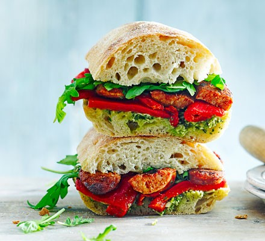

Chorizzo Ciabatta

Ultimate Chorizzo Ciabatta
Description:
Crusty ciabatta, spicy chorizo, a generous dollop of
pesto and sweet roasted peppers make a moreish combination.
Serve warm for a quick supper you'll really enjoy
Ingredients
- 2 small or 1 large ciabatta
- 150g pack cooking chorizo, halved lengthways
- 75g pesto
- 200g roasted red peppers from a jar
- handful rocket
Steps
- Heat oven to 180C/160C fan/gas 4 and put the ciabatta
in to warm up. Put a griddle pan over a medium heat and
cook the chorizo for 5 mins each side or until charred
and cooked through.
- Open up the warmed ciabatta and spread the pesto on the bottom.
Layer with the red peppers , then the warm chorizo. Scatter over the rocket,
sandwich the ciabatta together, cut in two and serve.